AI inside a building platform
One person looks after every light, sensor and switch in an office building. Four hundred of them is normal. They open the software each morning and find three hundred alerts, in no order, written in code. I led the design that put AI into two Cooper Lighting products. Now the software sorts that pile first, then says what it would do about it. The person still decides.
The software works it out and suggests. A person still decides
- Role
- Lead Experience Designer
- Company
- Cooper Lighting Solutions (Signify)
- What it is
- Software companies run their buildings with
- Runs on
- Phone and computer
- Scope
- First interviews to handing it to the engineers
- Team size
- 15 people across the company
- Designed
- 2025 to 2026, in Figma
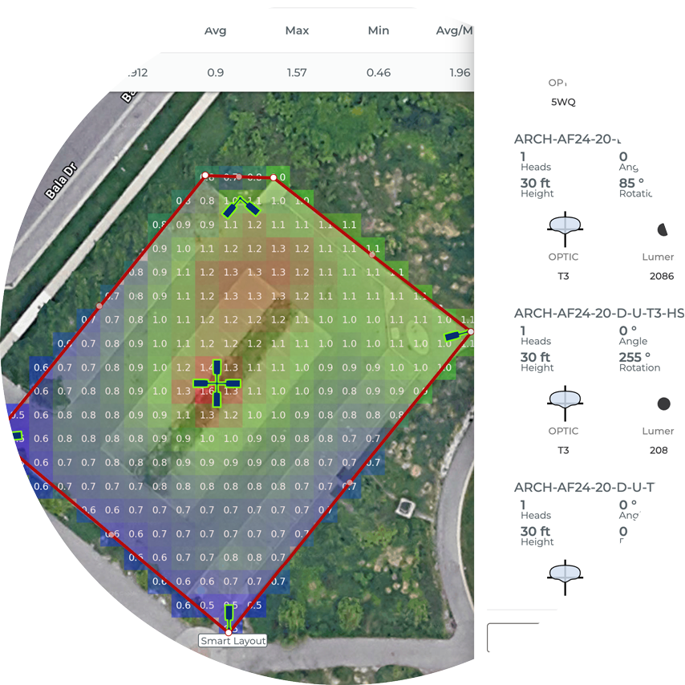
01 The idea
What this is actually about
In 2024 everybody was bolting a chat box onto their product and calling it AI. Most of it helped nobody. People tried it once, then trusted the software a little less than before.
So I started from the other end. Not how do we add AI, but where is a person doing work a computer should be doing for them. We went looking for the moments where somebody is holding too much in their head. Everything else we left alone.
It began as a hackathon: two days where the company drops its normal work and small teams build something. Ours turned into the plan the product teams then built from. Two products. Five features. One rule that covers all of them.
Setting a building up
“This is going to be a long week.”
Alerts
“I need to find the actual problem, now.”
What this work added up to
5 features Designed across two products, all following one rule
90% less Time to pick the right light file. The team’s own estimate from the prototype
75% less Time sorting alerts each morning, worked out the same way
Every time A person confirms before anything changes. Nothing happens on its own
02 The challenge
The easy version, and the trap next to it
Adding AI to work software is easy. Adding AI people actually lean on is hard. The difference is trust. Get it visibly wrong once and they stop reading anything the software tells them.
My job was to write down where we would use AI and where we would not. Then hold that line when the pressure was to put it everywhere.
The rule we worked to
AI should carry the thinking, not add to it. If a feature makes somebody learn one more thing before they can do their job, it is not helping. It does not ship.
-
Where it earns its place
Where there is far too much to hold in your head. Hundreds of devices. Thousands of readings. A catalog nobody has read all of. A person cannot keep that straight. A computer can.
-
Where it gets in the way
When somebody knows exactly what they are doing and it interrupts anyway. Or when it recommends something and cannot show you why. Then you have no way to check it.
03 Who it is for
Two very different jobs
Two groups use these products, and they want opposite things. We interviewed both, watched both work, and wrote down what each one actually does all day.
-
Group one
Building managers
They look after a building they cannot see all of. Hundreds, sometimes thousands, of light fittings and sensors, on several floors, day and night. Nobody is being careless. It is simply not possible to track that much at once. So small problems pile up quietly, until something breaks in front of a tenant.
-
Group two
Sales and design agents
They plan the lighting for a parking lot, a street or a whole site, then say exactly which products to buy. The catalog runs to thousands of items. Nobody knows all of it. Pick the wrong one and the job runs late and the profit goes with it.
What they are up against
400+ Connected devices in an ordinary building, each reporting for itself
5,000 Light files in a single family of light fittings
300 Alerts open at once, in a building we studied
6+ Families of light fitting that look alike and read alike on paper
04 How it happened
From a two-day sprint to a real product plan
This was not on anyone’s plan for the year. It started as a sprint and earned its place afterwards.
-
Step one · Finding the spots
Reading every screen for wasted effort
I walked through every job a person does in both products. I marked each place where they hold too much in their head, repeat the same decision, or need knowledge they have no way of having. Then I ranked that list by how much it would really help. That knocked most of it out.
-
Step two · The sprint
Two days, three working prototypes
I led the design side of the company AI sprint. We built clickable versions of three ideas: the new dashboard with its automatic shortcuts, the feature that spots a device about to fail, and the panel that recommends a light. All three were demonstrated inside two days, to the people who decide what gets built.
-
Step three · The hard part
Working out how much to let it say
This was the real design problem. A suggestion has to feel worth reading without feeling like an order. We went round several times on how it shows how sure it is, how it explains itself, and who has the last word. We landed on one rule and never broke it. Every suggestion ends at a person. The software recommends. The person acts.
-
Step four · Making it reusable
Adding the parts to the company kit
Rather than leave five one-off designs behind, I built the pieces into the company design system: the shared kit of screen parts every product is made from. The search bar. The recommendation card. The automatic shortcut. The warning badge. Any product that adds AI later starts from these, and the engineers had one place to build from.
-
Step five · Handing it over
Marked-up screens, and everything that goes wrong
I presented to the product and engineering teams. Then I wrote the order to build things in, ranked by how hard each one is against how much it is worth. The handover covered marked-up screens, the paths through them, and the cases that go wrong: no data yet, not enough history to learn from, a suggestion the person turns down.
05 Feature one · CORE
Three hundred alerts and no order to them
The problem
In a building with four hundred devices, the old screen handed one person the whole job of working out what matters. Three hundred alerts in a list is not a dashboard. It is an inbox with no rules. Every morning, the same sorting, by hand, from nothing.
What happens next is easy to guess. The one alert that mattered sits buried among the ones that did not. The same fault comes back all week and nobody spots that it is the same fault. Devices drop offline and stay there quietly, until a room stops working.
The software was reporting everything and understanding none of it.
“I spend my morning going through alerts I don’t understand, trying to work out which ones actually matter. By the time I’ve done that, half the day is gone.”Building manager, research interview
06 The design
The dashboard we built instead
Before
- One flat list of alerts, in no order
- You work out for yourself what “4 years 10 months old” means
- Checking the state of things means four or five screens
- A fault on its ninth visit looks like a brand new one
- No warning. You find out when it breaks
After
- Shortcuts appear on their own: today’s alerts, the urgent ones, the repeats
- The age becomes “about two months left”, with a suggestion attached
- Alerts, control boxes, devices and the software’s own health, on one screen
- A repeats view, so you chase the cause instead of the symptom
- A badge that warns you before the thing fails
Six decisions do most of the work on the screen itself. Each one answers a specific complaint from the research.
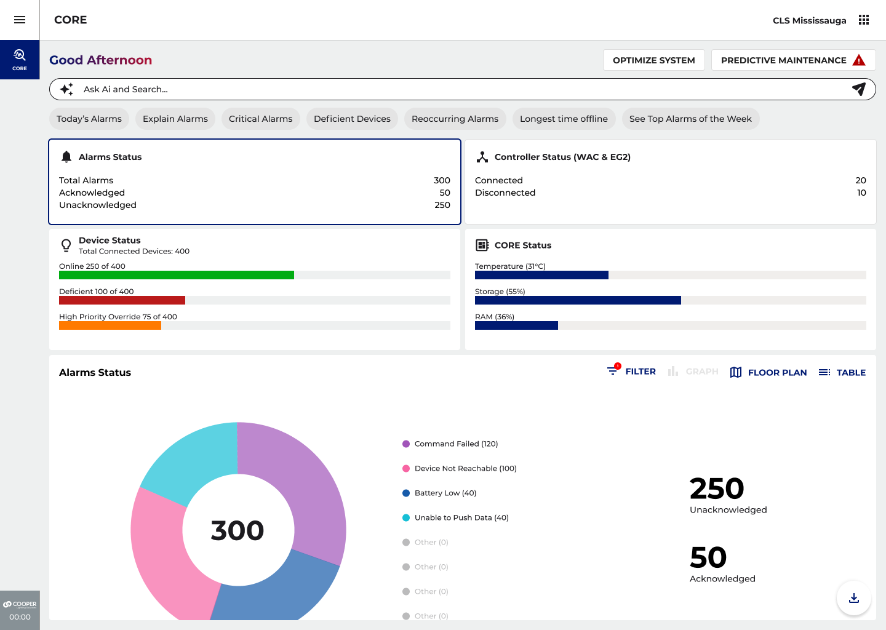
One screen, no navigating
Everything a building manager checks first thing, in one place. The six notes below point at the parts doing the work.
-
It greets you, and it knows the time
“Good afternoon” looks like decoration. It is not. It is the first hint that this thing is awake and watching, rather than a page of numbers from whenever it last loaded.
-
A search bar that answers, not just filters
Ask it a question in ordinary words. How do I fix this. What does this piece of hardware do. What is the rule for setting a building up. The answer arrives on the screen you are already on. Nobody goes hunting for the manual.
-
Shortcuts you did not have to make
Today’s alerts. The urgent ones. The repeats. Devices in a bad way. Whatever has been offline longest. The software picks these from what is urgent and what keeps happening. Tap one and the whole screen rebuilds around it. You do not go anywhere.
-
The same facts, three ways to look
A chart, a floor plan, or a plain table, with no wait in between. People really do differ. Some think in space and want the plan. Some want the numbers. Some just want the shape of the week.
-
The whole picture without clicking
How many alerts. Which have been dealt with and which have not. Whether the control boxes are still talking. What state the devices are in. All at once. That is the difference between a status page and something you can run a building from.
-
Is the software itself all right?
Temperature, storage and memory for CORE itself, always on screen. When something looks wrong, you can tell straight away whether the trouble is out in the building or in here.
Explaining an alert, then saying what to do
The alert list used to speak in codes. This part removes the translation step.
Tap a low-battery alert and you do not get a definition. You get four steps. Which device it is. Which battery it takes. How to check it worked. Who to call if it did not.
The floor plan does the same job for place. Alerts are drawn on the layout of the building, so whoever is going to fix it knows which room to walk to before leaving their desk. Both are there to close one gap: between something is wrong and here is what to do about it.
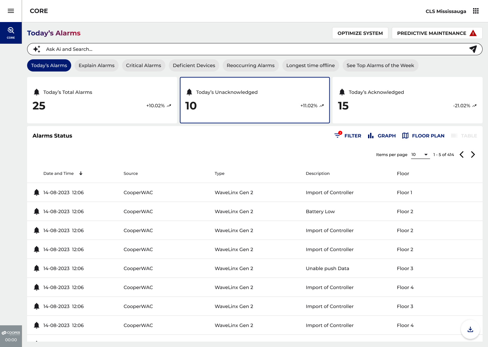
Tapping a shortcut rebuilds the screen
You stay in one place. The screen narrows to the thing you asked about.
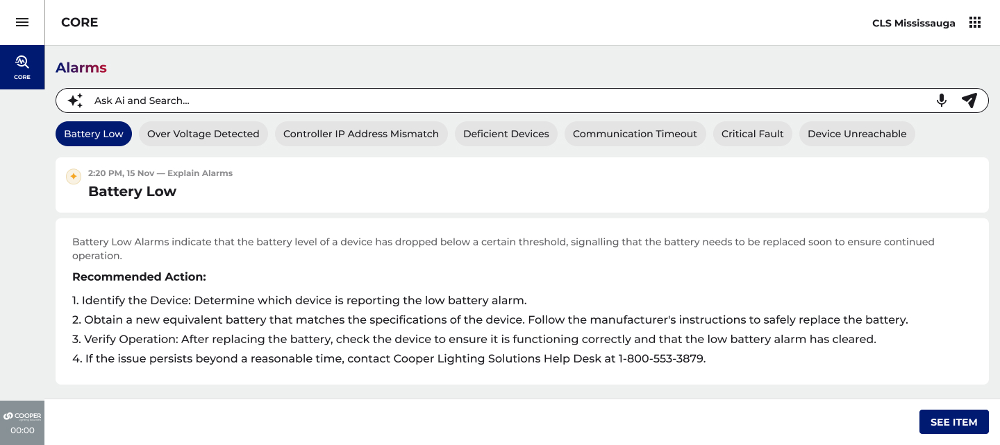
A code turned into four steps
Find the device, get the right battery, check it worked, call for help if it did not.
07 Feature two · CORE
Finding out before it breaks, not after
This part watches how every device is holding up and tells you which ones are near the end. Not a list of dates. A short list of things worth doing, each with a suggestion on it.
The whole design in one sentence
Without AI, this screen is a list of devices and their ages, and you work out what that means. With it, the software does that part. The suggestion is not a link to a manual. It is a decision, already thought through, ready to take or turn down.
About 5 years How long the battery in a wireless sensor usually lasts
2 months What is left before it turns urgent, in the example shown
4 signals Its age, its software version, whether it keeps dropping out, and what has failed before
Detective to decision-maker How the job changes. The software digs. The person calls it
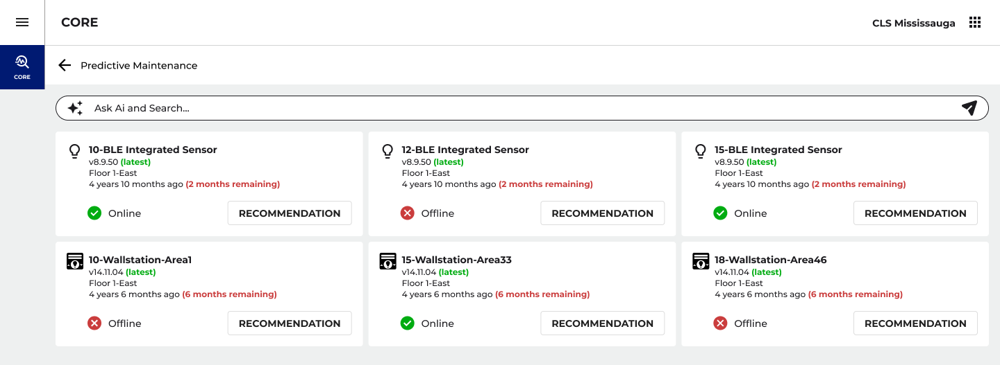
A short list, with a deadline on each row
Devices nearing the end of their life, how long each one has left, and a suggestion you can open.
How this screen is meant to feel
We designed for one feeling, and wrote it down so we could test against it: “I’m ahead of it.”
- Not anxious. Not swamped. Ahead of it.
- Somebody is watching the building. Problems get caught before they become emergencies.
- The software sorts. The person decides. Who is in charge never moves.
- The list is short enough to actually work through, and every line says how long you have.
The other views
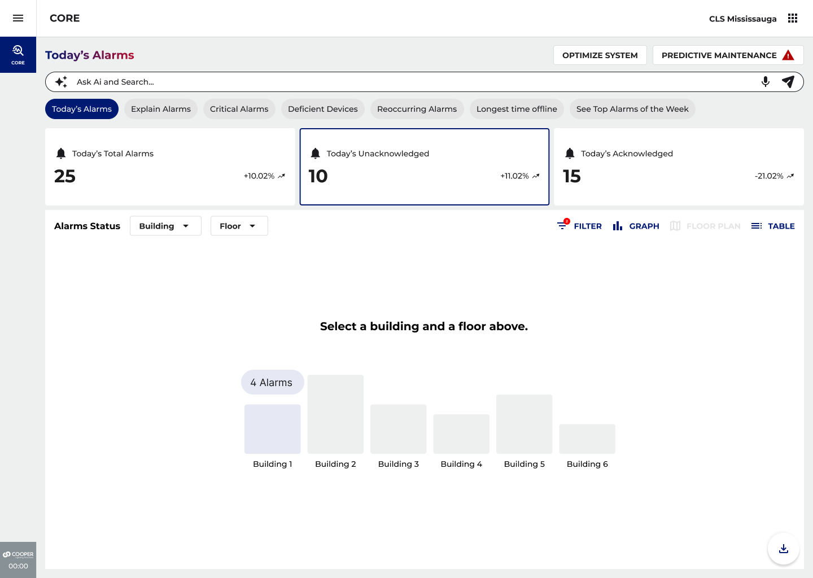
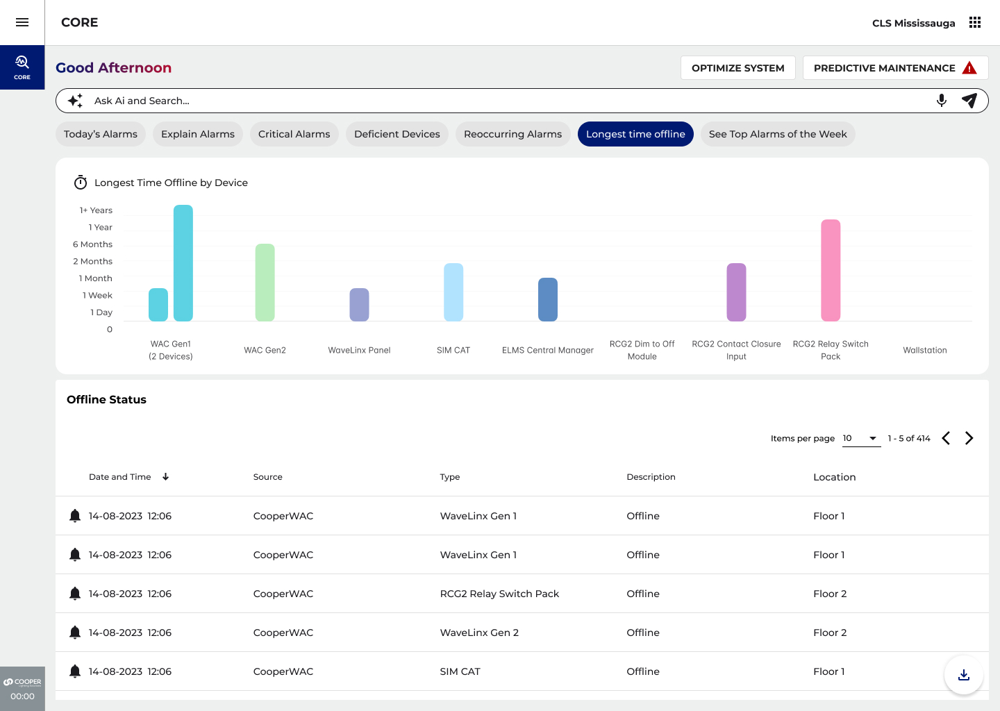
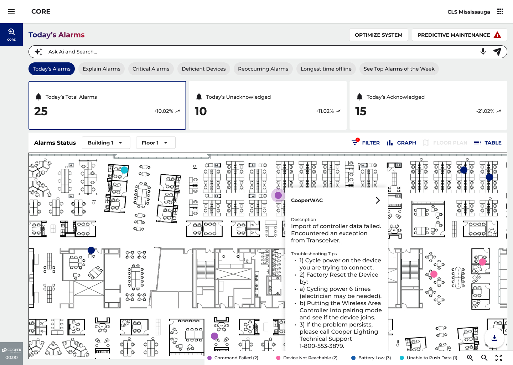
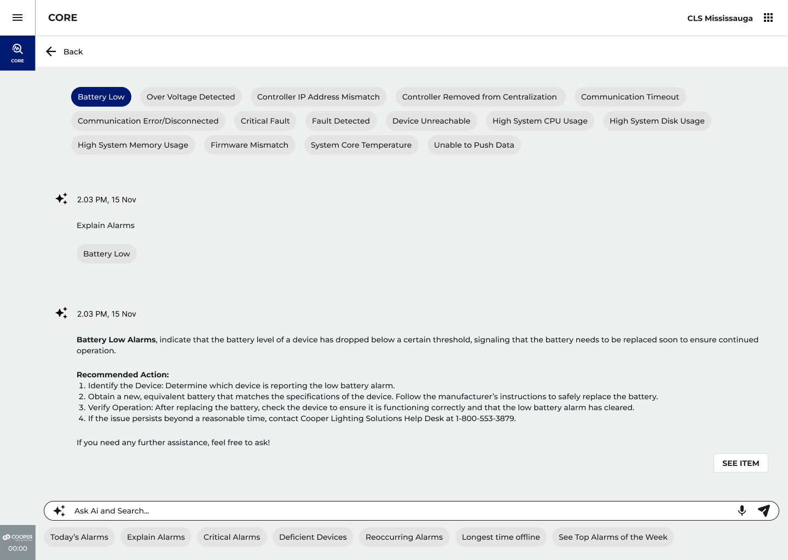
Same facts, four ways in
The chart, the ranked list of what has been offline longest, the floor plan, and a single alert explained. Nobody has to think the way the screen thinks.
What changes for the person doing the job
| Situation | Before | After |
|---|---|---|
| A device getting old | You have to know what “4 years 10 months” means for risk | The software says “about two months left” and suggests what to do |
| A fault that keeps coming back | Looks the same as a first-time alert. Nothing spots the pattern | A repeats view separates the noise from the thing that is really wrong |
| Devices that have dropped offline | They pile up unnoticed until somebody goes looking | A ranked chart of what has been missing longest makes it obvious at a glance |
| Planning repairs | You react, after a failure or after somebody walks the site | Replacements are flagged weeks or months ahead |
| Understanding a code | Look it up yourself, or call support | It is explained in plain words, with the steps to fix it |
08 Feature three · CORE
A building that retunes itself
The feature I am proudest of is the one you would never notice. It watches how a space is really used, then quietly moves the settings to match.
The problem
Most lighting systems are set up once, the week the building opens, then left alone. Those settings were chosen for an imagined version of the space, not the people who ended up in it. Staff change. Hours change. Habits change. The lighting drifts further from what anyone wants.
Fixing it means a technician visit, a written request, and somebody who knows the system. So most buildings never bother. They run for years on settings that stopped fitting long ago.
What we designed
One screen, one decision: save energy or keep people comfortable. That single choice sets the priority for the whole site. Switch the feature on and it can adjust the general settings, how the space responds to people coming and going, what the wall switches do, and the schedules. You say what you want. It works out how.
How the learning works, with a real example
On day one the lights come up to 50% when somebody walks in. Over the next two weeks, a person keeps pushing them to 80% at the wall switch. If the site is set to keep people comfortable, CORE reads that as a pattern rather than a one-off, and makes 80% the new normal for that space. No request form. No technician. Nobody resets anything.
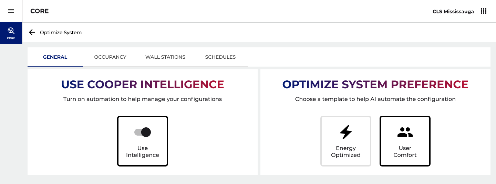
One choice at the top, the rest follows
The building manager sets the goal. The four groups underneath are what the software is then allowed to adjust on its own.
09 Feature four · Light ARchitect
Describe the job, get the right light
The problem
The catalog covers six families of light fitting. Each family holds dozens of versions: different brightnesses, different ways of mounting them, different rebate programs they qualify for.
Inside one family the options barely look different. Somebody without deep product knowledge has no reliable way to tell which one will actually light their parking lot properly. Scrolling will not answer it, because the answer depends on the site.
-
A deep catalog, a shallow week
Agents are expected to know families they have never used. That depth is a gift to an expert and a wall to everyone else.
-
Hours for one recommendation
Choosing a light for one kind of project could mean hours of reading data sheets, brightness figures and rebate rules, and checking each against the others.
-
The same answer is wrong for two people
Different kinds of agent get different products, different prices and different rebates. One recommendation cannot serve both.
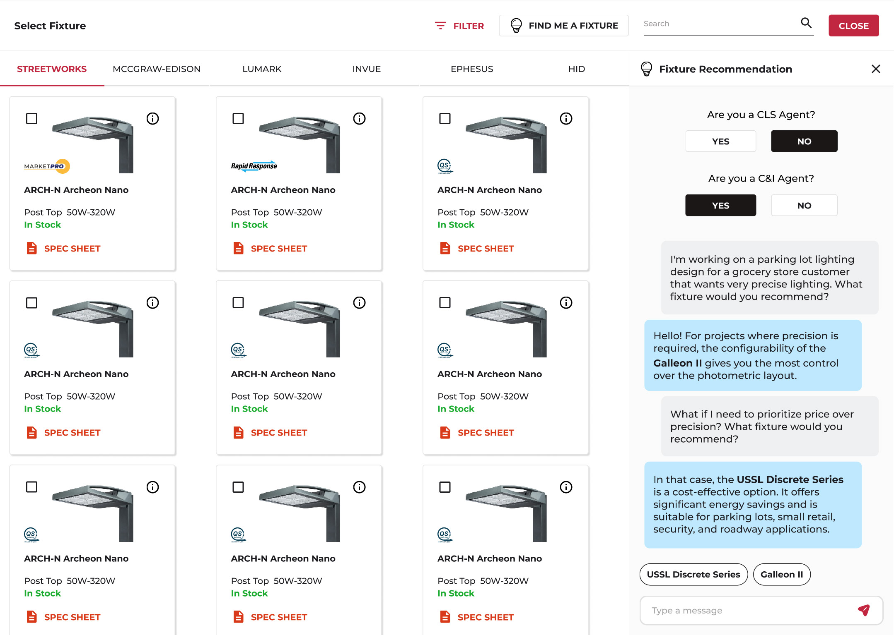
A conversation instead of a catalog
The panel asks who you are, listens to the job in your own words, and finishes with two named lights you can act on.
-
It asks who you are first
Before anything else, the panel works out which kind of agent you are. That is what lets it suggest products you can actually sell, at prices that apply to you, with rebates you qualify for. The right light for the right person, not just the right job.
-
You describe it in your own words
No filter panels. You say what the situation is, the way you would say it to a colleague. That is the whole point. You no longer need product expertise to get an accurate answer.
-
Change your mind and it keeps up
When the priority moves from getting it exactly right to getting it cheaper, the suggestion changes on the spot. Nothing to restart. No filters to set again.
-
The answer is the next step
The conversation ends with two lights shown as buttons, not as a paragraph. Tap one and you are into the next part of the job. You never go back to the grid to find what you were just told.
10 Feature five · Light ARchitect
Five thousand files, one button
Every light fitting comes with a light file. It tells the software exactly how much light that fitting throws, and in which directions. Get the wrong one and the whole plan is wrong. Choosing it used to be the worst job in the tool.
The size of the problem
One family of fittings has five thousand of these files. Each is a different mix of color temperature, how bright it is, and how much electricity it uses. Even after filtering on all three, you are still making a technical call that needs expertise most agents do not have. Scrolling is not an option.
What we designed
You work on a real map. You draw the edge of each area: main parking, the entrance, the side bays. Then you place the lights at the height they will really be mounted at.
The clever part is a panel where you describe the result you want, not the product you want. How good it needs to be. What color the light should be. The minimum brightness you have to hit. How even it must look. Whether you need to keep light off the neighbors.
Then you press Generate. Light ARchitect matches every one of those to the exact file in the library, and applies it to each light on the plan.
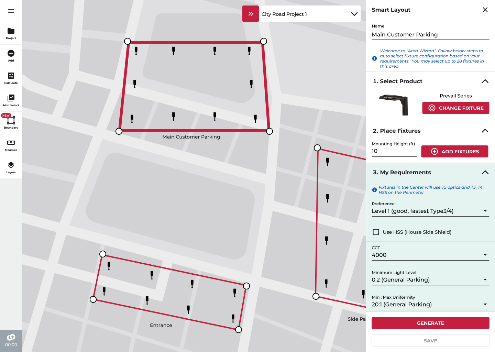
Where the five thousand files went
Nowhere. The library is still there, doing all the work underneath. It just stopped being something a person has to read.
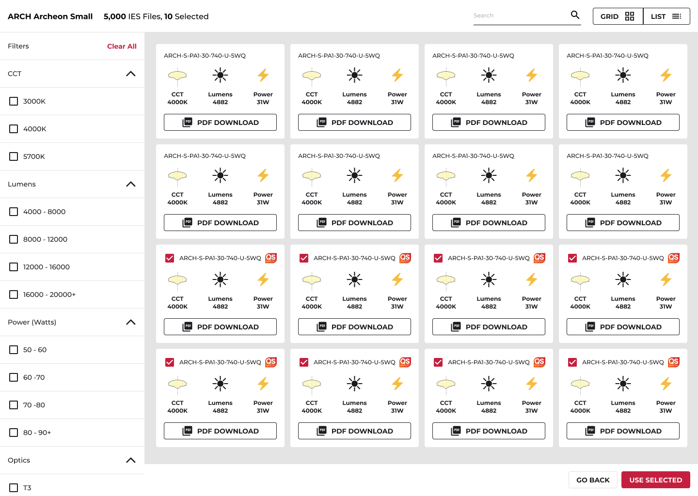
One press, every light filled in
The files picked and applied to each position on the layout, with the requirements that produced them still on screen so you can check the working.
Why this one matters to the business
An agent may be running several projects at once, on different kinds of site. This takes out the most technical and slowest step in the whole job. Thousands of small decisions become one press that already knows the context.
11 Results
What it delivered
First, where these numbers come from. Straight after the sprint, the features were shown to the engineers and to the people who decide what gets built. The design work set the plan, the way AI should behave, and the reusable parts. The time savings below are the team’s own estimates, measured against the working prototypes rather than a year of customer data. Where you see a range, it is because sites differ.
90% less Time spent choosing a light file Against the old way of filtering by hand
75% less Time a building manager spends sorting alerts each day Against sorting a flat list of three hundred by hand
3 features Carried through to the build plan, across two products Out of five designed. The other two are queued behind them
0 Manual resets needed once the system is learning how a space is used Every change used to mean a written request and a technician visit
Time to a finished plan
| Step | Before | After |
|---|---|---|
| Working out which light to use | 2 to 4 hours | About 5 minutes |
| Choosing the light file | 45 to 90 minutes | One press |
| Getting to a quote | Hours, sometimes days | Minutes |
What the design work left behind
-
A different story for the product
It moved the pitch from chasing alerts to getting ahead of them. And it did that with something working that people could click.
-
Parts anyone can reuse
Recommendation cards, automatic shortcuts, the AI search bar and the warning badge all went into the company’s shared kit of screen parts.
-
The expertise wall came down
An agent can now get an accurate suggestion suited to their own role, without specialist product knowledge.
-
A system that keeps tuning itself
The learning layer removes the manual reset that used to follow every change in how a space is used. That was a first for this platform.
-
A handover engineering could build from
Marked-up screens, the paths through them, and the awkward cases written out, for three features across two products.
-
One rule, everywhere
Every suggestion in every feature ends at a person. That is now how AI behaves across the whole range.
12 Looking back
What I learned, and what I would push further
Leading this across two very different products, on a short clock, forced a few things into the open that a longer project would have let me leave vague.
-
What held up
Every suggestion has to end at a person
Nothing here decides on its own. The software puts it in front of you. You act. That was not a compromise to get the thing approved. It is the reason people took to it instead of bracing against it. In a building somebody is legally responsible for, “the AI decided” is not a sentence anyone can use. “The AI suggested, I confirmed” is.
-
Hardest problem
Saying how sure it is, without causing alarm
“Replace this device” has to sound worth acting on without sounding final. Too confident and people follow it off a cliff. Too careful and they ignore it. We got it somewhere workable. The next version should show its reasoning, so you can argue with the reasoning rather than the answer.
-
What I would push further
Answers that change with who is asking
Asking the agent’s role first, in Light ARchitect, was worth more than anything else in that feature. The same idea belongs in CORE. A building manager, a contractor and the person who owns the building want completely different things from the same screen. Right now they all get the same one.
-
The wider lesson
The best part is the part you cannot see
The self-tuning feature is the one I am proudest of, precisely because it never announces itself. The building just works a little better each month. The manager does not see AI. They see a system that seems to understand them. That is the bar.